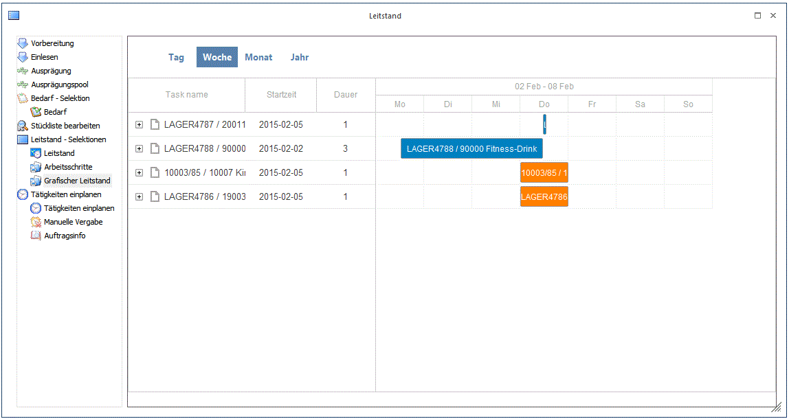
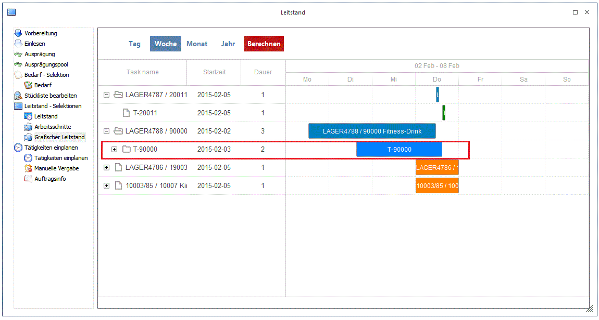

Der Baum-Menüpunkt "Grafischer Leitstand" bietet eine grafische Ansicht von den Produktionsaufträgen, die im Leitstand selektiert sind.

Eingeplante Produktionsaufträge sind farblich anders als nicht eingeplante Aufträge gekennzeichnet. In der obigen Darstellung beispielsweise sind die oberen zwei Aufträge eingeplant und die unteren zwei Aufträge nicht eingeplant.
Hinweis
Die Farbgebung der Balken im grafischen Leitstand kann in den PPS-Parameter, Bereich "Fehlzeiten" eingestellt werden. Eingeplante Aufträge sind mit der generelle Farbe "13 Produktionsauftrag" dargestellt und nicht eingeplante Aufträge mit der generellen Farbe "3 Abweichung". Generelle Farbe "14 Tätigkeit" ist für die Darstellung der Tätigkeits-Balken vorgesehen.
Die Tätigkeiten innerhalb eines Prod.Auftrags können mit einem Klick auf das "Plus"-Symbol vor
der Produktionsauftragsnummer eingeblendet werden.

Die Produktionsaufträge beim Öffnen des grafischen Leitstands werden in der gleichen Reihenfolge wie im Leitstand angezeigt. Es können Produktionsaufträge auf zwei verschiedene Arten im grafischen Leitstand bearbeitet werden:
Datumsänderung
Der Produktionsauftrag-Balken in der grafischen Ansicht kann mit der Maus nach links und rechts auf einen anderen Tag bzw. Woche verschoben werden. Dadurch wird das Einplanungsdatum des Produktionsauftrags geändert. In diesem Fall wird der Button "Berechnen" im oberen Teil des Fensters aktiviert. Wird der Berechnen-Button gedrückt, wird in die "Tätigkeiten
einplanen" gewechselt, wo alle Tätigkeiten von den Produktionsaufträgen zuerst ausgeplant und dann wieder eingeplant werden (bei ggf. ausreichender Ressourcen). Wenn die Tätigkeiten eingeplant werden konnten, wird der grafischen Leitstand anschließend wieder geöffnet. Falls nicht, bleibt das Fenster "Tätigkeiten einplanen" offen, um evt. die entsprechende Änderungen in den Tätigkeiten vornehmen zu können.
Hinweis
Wenn abgeschlossene Produktionsaufträge bzw. Simulationen für die Ausgabe im Leitstand selektiert werden, ist diese Verschiebungs-Funktion nicht unterstützt. Beim Verschieben eines Balkens in der Anzeige erscheint eine Meldung, dass die Aktion nicht zulässig ist. Diese Einschränkung gilt auch bei dieser Selektionen für noch nicht abgeschlossene Aufträge in der Anzeige.
Prioritätsänderung (Reihenfolge)
Prinzipiell sind die Produktionsaufträge im grafischen Leitstand von oben nach unten nach absteigender Priorität des Auftrags gereiht. Mit der Maus kann per Drag&Drop ein Produktionsauftrag hinauf- bzw. herunterverschoben werden. Die Priorität des Auftrags wird automatisch dementsprechend angepasst. In diesem Fall wird der der Button "Berechnen" auch aktiviert. Wie bei einer Datumänderung, kann eine Neukalkulation (Recalc) von den Tätigkeiten mit dem Button durchgeführt werden.
Hinweis
Wenn abgeschlossene Produktionsaufträge bzw. Simulationen für die Ausgabe im Leitstand selektiert werden, ist diese Verschiebungs-Funktion nicht unterstützt. Beim Verschieben eines Auftrages in der Anzeige erscheint eine Meldung, dass die Aktion nicht zulässig ist. Diese Einschränkung gilt auch bei dieser Selektionen für noch nicht abgeschlossene Aufträge in der Anzeige.
Buttons im Grafischen Leitstand
Ø Tag/Woche/Monat/Jahr
Die Kalibrierung der Zeiteinheit für die grafische Ansicht kann mit einem von diesen Buttons eingestellt werden.
Ø Berechnen
Wird dieser Button gedrückt, wird in die "Tätigkeiten einplanen" gewechselt, wo alle Tätigkeiten von den betroffenen Produktionsaufträgen zuerst ausgeplant und dann wieder eingeplant werden (bei ggf. ausreichender Ressourcen). Wenn die Tätigkeiten eingeplant werden konnten, wird der grafischen Leitstand anschließend wieder geöffnet. Falls nicht, bleibt das Fenster "Tätigkeiten einplanen" offen, um evt. Die entsprechende Änderungen in den Tätigkeiten vornehmen zu können.